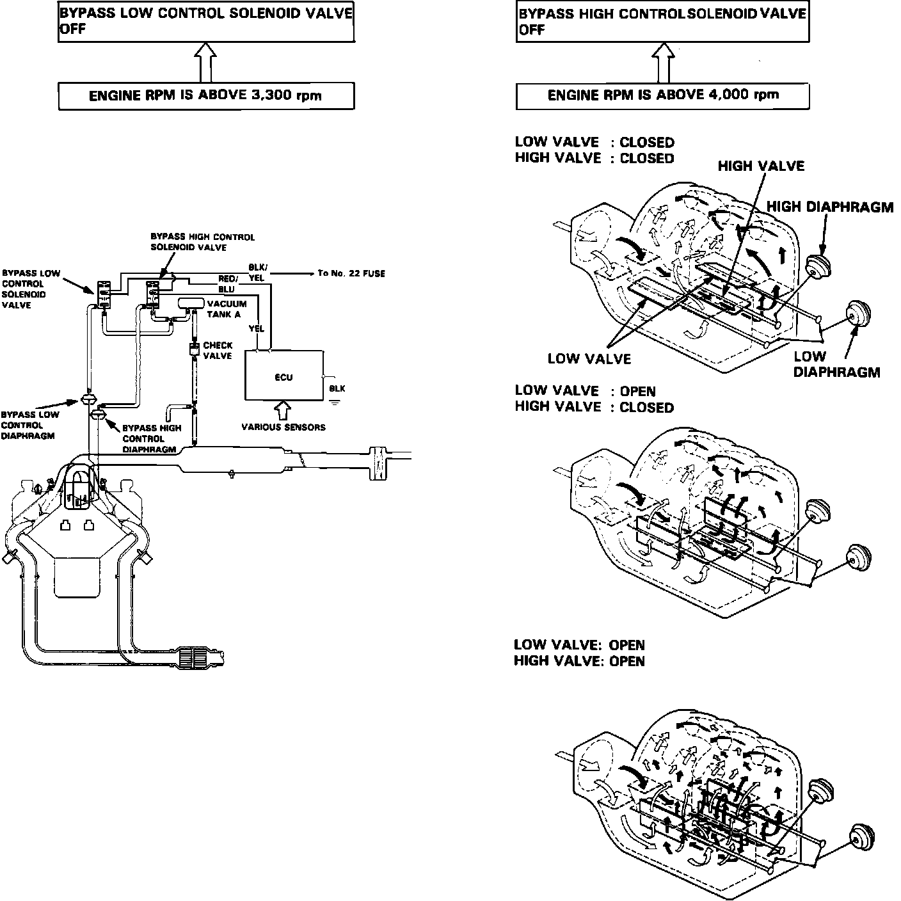

Variable Induction System: Description and Operation
Intake Chamber Volume Control System:

The chamber volume control system optimizes engine performance under various engine speed and load conditions. This is accomplished by re-directing intake air through various chambers in the intake manifold. The chamber control valve assembly is located in the lower section of the intake manifold.
When engine speed is below 3,300 RPM, both chamber valve assemblies are closed, forcing intake air through a low-volume, high velocity path. Between 3,300 and 4,000 RPM, the low valve assembly opens, allowing intake to flow through shorter bottom chamber paths. Above 4,000 RPM, the high valve assembly also opens, allowing the least restrictive path for intake air.
The chamber valves are operated by vacuum diaphragms which are controlled by solenoid valves. The operation of each solenoid valve is controlled by the ECU.